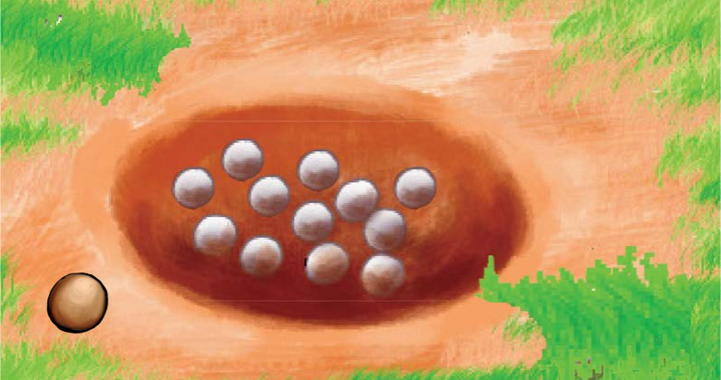
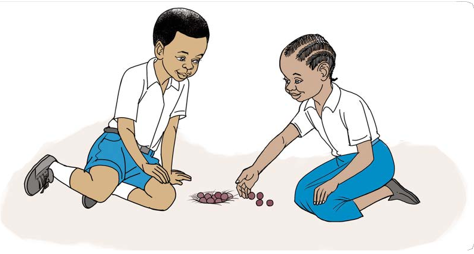
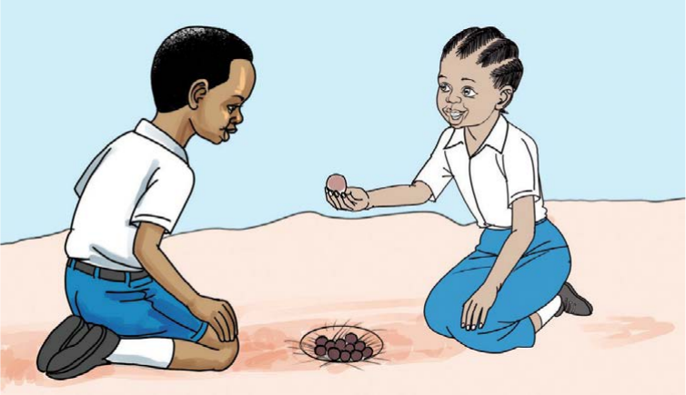
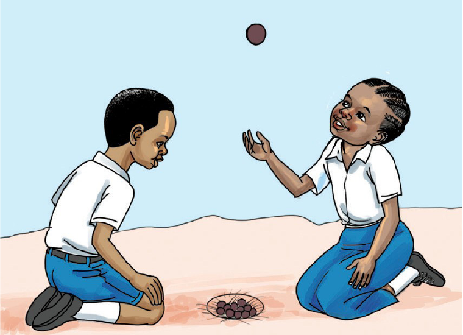
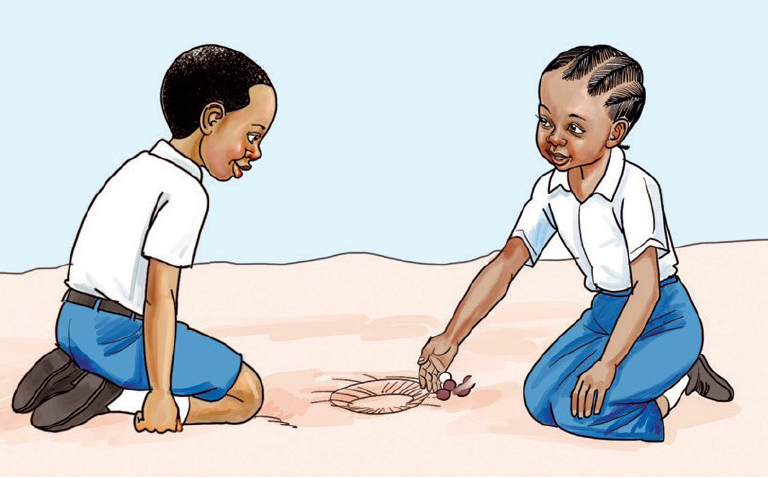
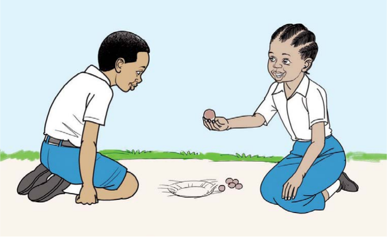

Tucheze mchezo
Mchezo wa mdako
Vifaa: Kete ndogo 12, kete kubwa 1 na shimo la kuchezea.
Mchezo wa mdako unahusisha mchezaji zaidi ya mmoja.


Jinsi ya kucheza mchezo wa mdako
Wachezaji kaeni kwa kutazamana, shimo likiwa katikati.




- Rudisha kete mbili ndani ya shimo. Endelea hadi kete zote ziwe shimoni.
- Endelea kuingiza na kutoa kete kwa mafungu: (4, 4, 4), (6, 6), (8, 4), (10, 2), na zote 12.
- Mwisho, toa na kuingiza kete zote kumi na mbili kwa pamoja.
- Mshindi ni anayemaliza bila kudondosha kete kubwa na aliyeingiza na kutoa kete kwa usahihi.
Shughuli ya kufanya 3
Cheza mchezo wa mdako katika vikundi vidogovidogo kwa kufuata sheria zake.